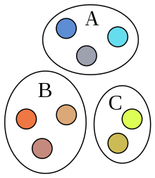
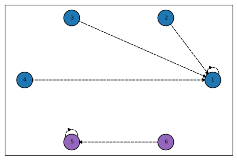
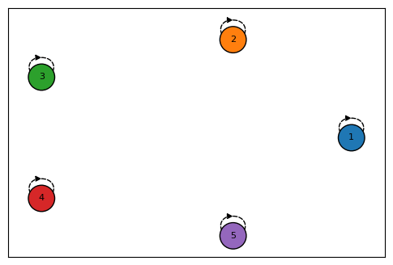
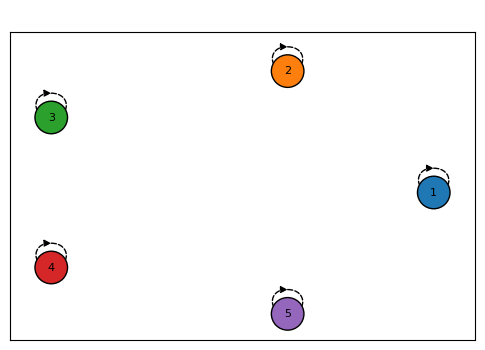

Disjoint Set and Union-find¶
Disjoint Set in Math¶

서로소 집합(Disjoint Set)이란 집합 간에 상호 배타적인 집합들을 말한다1. 예를 들면, 우측 그림과 같이 A, B와 C의 집합에서 서로 같은색이 하나도 없는 것이며, 이를 서로소 집합이라고 한다. 수식으로 다음과 같이 표현할 수 있다.
Disjoint Set in Data structure¶
컴퓨터 과학에서 disjoint set 자료 구조(union-find 자료 구조 또는 merge-find 자료 구조)는 서로소 집합을 저장하는 데이터 구조이다2. 초기화하는 make_set, 찾기인 find 그리고 병합인 union으로 총 3 개의 연산을 수행한다.
make_set(x):x를 유일한 원소로 하는 새로운 집합을 만든다.find(x):x가 속한 집합의 대표 값(루트 노드 값)을 반환한다.union(x, y):x가 속한 집합과y가 속한 집합을 합친다.
Implementation¶
부모 노드의 위치만 알면 됨으로, parent의 구현은 실제 트리가 아닌 dictionary로 만들었다. union의 경우, 만약 같은 부모 루트가 아니라면, 항상 y 노드의 루트 노드를 x 노드의 루트로 바꾼다.
예를 들어, 아래 그림과 같이 3개의 트리로 구성된 disjoint set을 구현해보자.
flowchart BT;
a2((2)):::c1 --> a1((1)):::c1;
a3((3)):::c1 --> a1;
a4((4)):::c1 --> a1;
a6((6)):::c2 --> a5((5)):::c2;
classDef c1 fill:#f79f94;
classDef c2 fill:#87c5d6;위 그래프에 따른 연산을 수행 시 disjoint set은 다음과 같다.

Path Compression¶
find 함수에서 각 노드가 최종 루트 노드만 가르키면 되기 때문에, 연결 리스트와 같은 트리의 경우 비효율적이다. 예를 들어 \(5 \rightarrow 4 \rightarrow 3 \rightarrow 2 \rightarrow 1\) 인 연결 리스트(트리)에서 disjoint set(1개)을 만들려면, 다음과 같다.

결국에는 처음 끝까지 연결되어 있기 때문에, find(5) 일 때 모든 자식 노드를 거쳐서 5를 찾아야한다. 이를 방지하기 위해서 find 함수를 거치면서 각 자식 노드들이 본래의 루트 노드와 직접 연결하게 만드는 과정을 Path Compression 이라고 한다. 코드로 다음과 같이 find 부분을 수정한다.
그리고 union 수행 후, 앞으로 find 함수로 호출하면 해당 경로에 있는 경로는 압축이 된다. 위 수정된 find 코드 에서 5번 라인 재귀 함수를 루트 노드 까지 호출 한 다음에 재귀를 빠져나오면서 루트가 수정이 된다. 예를 들어 find(5)를 수행하면 다음과 같다.

Rank Compression¶
Rank Compression은 두 트리를 합병 할 때, 항상 높이가 더 낮은 트리를 높은 트리 밑에 넣는 방법이다. 기존의 코드를 수정하면 다음과 같다.
rank 저장할 공간을 초기화 한다.
항상 rank가 낮은 트리는 높은 트리의 root로 합병된다. 그렇지 않으면 기존대로 x의 루트로 합병되며, rank가 같은 경우에는 x 루트만 하나 상승시킨다.
Rank compression 이후에 자동으로 union시 하나의 루트 노드만 가르키게 된다.
Why using tree structure?¶
Disjoint set 자료구조를 트리로 구현하는 이유는 배열로 구현 할 경우, union 에서 배열의 모든 원소를 순회하면서 바꿔줘야 한다는 단점이 있다(union: \(O(N)\), find: \(O(1)\)). 반면 rank compression된 트리로 구현 시, union 은 루트 노드를 찾아서 다르면 합치기만 하면 되서, find 연산에 전적으로 의존하게 된다. 트리의 높이에 의해 결정되고, 최악의 경우 \(O(\log N)\) 이 되서, 향상된 성능을 낼 수가 있다245.
- python에서는 dictionary(
dict) 자료 구조로 진행했지만 트리 클래스를 직접 만들어서 구현해 볼 수도 있을 것이다.